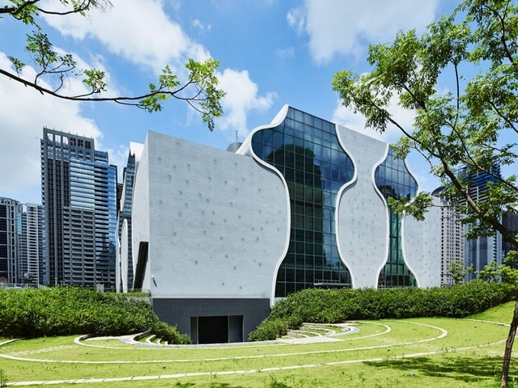
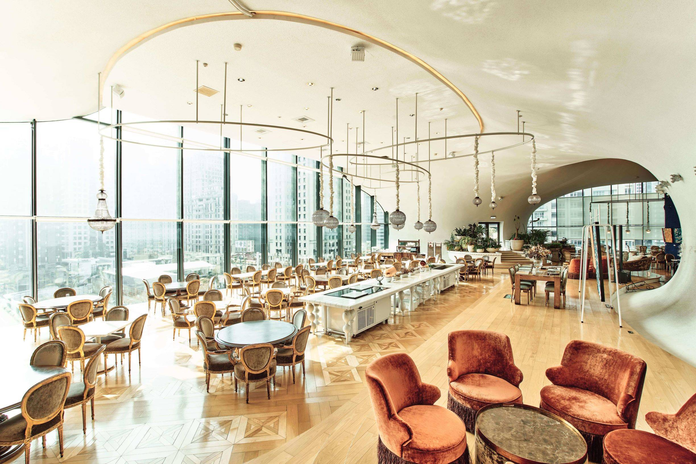
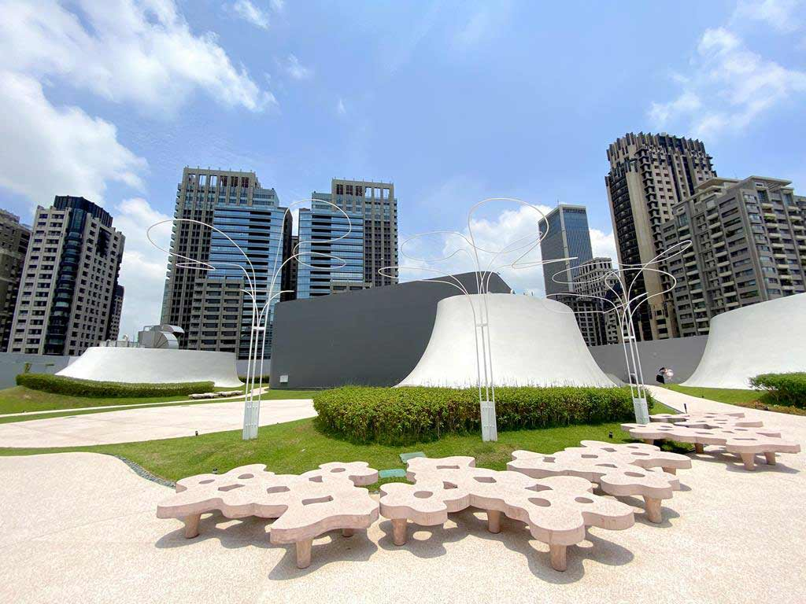

臺中國家歌劇院
美聲涵洞
臺中國家歌劇院造型前衛，以「美聲涵洞」概念，採用曲牆、孔洞與管狀等別具一格的設計，整棟建築完全沒有樑柱支撐，也無一處為90度牆面，顛覆了一般建築物的概念
歷經多年的建設，一座與人、與自然共生的劇場即將在臺中誕生。圓弧曲線，靜靜孵育眾人的期待；玻璃帷幕映著藍天，周邊環繞的綠地、流水成為城市的桃花源。「壺中居」歌劇院正 面造型猶如曲線的酒壺，觀眾如酩酊般陶醉於節目的精彩，讚歎藝術無盡的可能壺面鑲有多個圓筒窗，夜晚隨燈光投射展現出優雅與溫暖．這裡是表演藝術的搖籃、是人們生活休憩與吸取新 知的地方，更是中臺灣文化生活接受翻新的起點。這就是臺中國家歌劇院

VVG Food Play & Bar 好樣食藝餐廳
VVG Food Play & Bar以創意解構藝術與文化，塑造以食物為創作原料、餐桌為舞台的展演空間
打造精緻的義法料理，現以單點餐點與升級套餐的服務模式供餐，希望在舌尖上打造出獨特的食飲風景與美 好的飲食經驗。2019年9月導入VVG Bar，加入來自台北、同樣很有想法的，雞尾酒品牌Draft Land以及臺虎精釀 啤酒，讓看劇的人也能在此找到一處喝杯小酒、聊聊表演觀後感的空間！

空中花園
由日本建築大師伊東豐雄設計，不只外觀美，連頂樓都很有設計感，一個個的圓頂白色山丘，像是來到異星世界，千萬別錯過了！
在歌劇院六樓，可以看到所有曲牆的終點止在高度32公尺處，進而形成獨具特色的頂樓風光。走到屋頂庭園，就像離開洞窟，被包覆在無止境的 廣大天空中享受自然。我們彷彿置身獨立的宇宙行星體系中。幕塔前的空地適合舉辦露天音樂會或播放戶外電影，一邊仰望星空與百萬夜景，一邊 吹著涼風聽音樂，十分愜意
